Départ : 7 janvier 2025, Marina de Mindelo, Île de Sao Vicente, Cap-Vert
Ça y est, on peut dire qu’on y est… en transat. Nous sommes partis pour traverser l’océan Atlantique !
En arrivant à Mindelo, on s’est retrouvé à 6 équipages étudiants : 4 The Wind, Sail for Tomorrow, Exocet, Les Léz’arts Marins et O’Seas. L’ambiance était folle ! On s’est fait une bonne soirée tous ensemble avant de partir, ça nous a fait tellement de bien.
On avait déjà rencontré les autres équipages lors de précédentes escales sauf O’Seas. On s’est très vite lié d’amitié avec eux aussi !
La veille de notre départ, on souhaite bon vent à Yohann et Lucie du bateau Camogli. On sait qu’on les rattrapera en chemin et qu’on les retrouvera aux Antilles.
C’est maintenant à nous de partir, le bateau est prêt et nous aussi. Au moment de larguer les amarres, les autres équipages viennent nous faire coucou et sonner les cornes de brume. Eux, partirons ensemble quelques jours après nous.
Nous quittons la baie de Mindelo et hissons les voiles. On regarde petit à petit la côte s’éloigner en même temps que le soleil se couche. La route sera longue, nous avons près de 2100 milles à parcourir. Ça fait assez bizarre de se dire qu’on va rester environ deux semaines sur notre bateau de 11,30m.
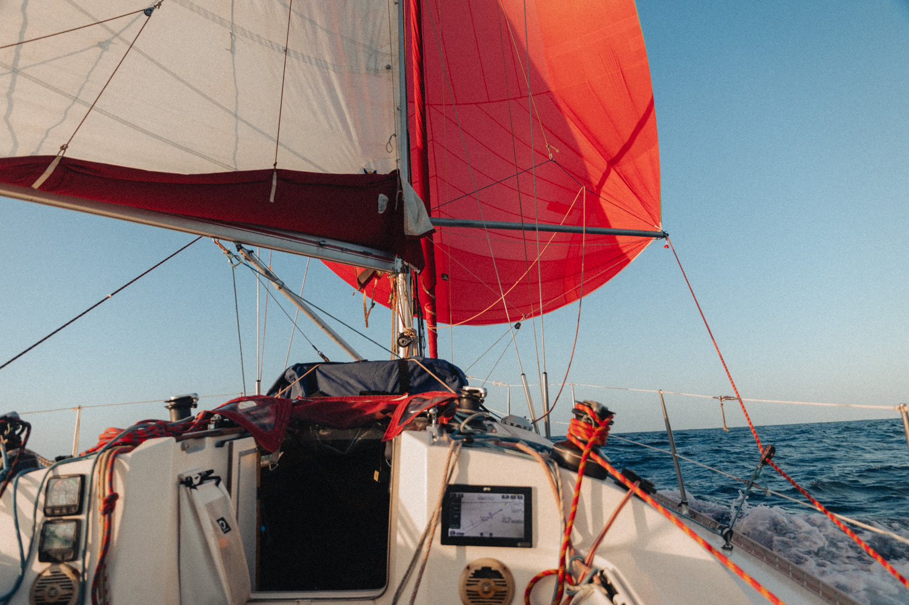
Ce matin je me suis levé tard car Clément ne m'a pas réveillé, il a prolongé son quart jusqu’au repas du midi. Les gars ont cuisiné puis je suis allé me coucher. J'ai dormi tout l'après-midi midi. Nous avons mis les lignes de pêche à l'eau mais nous n’avons rien pêché.
Toujours sous spi depuis la première nuit. Le vent est idéal, jamais trop fort et plutôt très régulier. Le bateau est à plat et les milles défilent à grande vitesse, depuis le départ nous sommes à 7,2 nœuds de moyenne. Les surfs à plus de 10 nœuds sont aussi assez réguliers. Malgré tout, le bateau ne nécessite que très peu d’attention.
La lune est toujours bien présente pour éclairer le début de quart. Franchement un réel bonheur depuis le départ de cette navigation.
Dans la journée on a pêché une belle dorade coryphène qui nous a régalés à l’occasion de deux repas. On l’a cuisinée cru en entrée puis en classico pour le plat (cuite aller-retour à la poêle, accompagnée de riz et d’une sauce huile d’olive, ail basilic). Félicien l’a ensuite cuisiné en curry - coco pour le repas du soir.
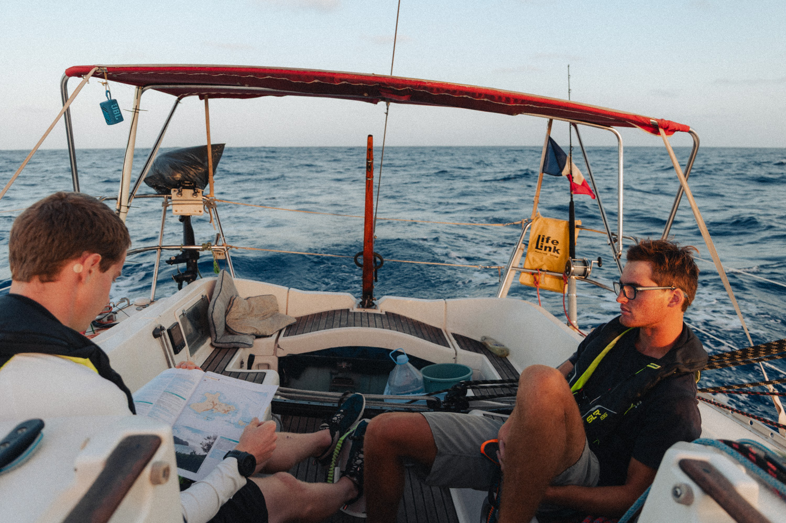
J’ai trainé dans mon lit ce matin. Quand je me suis levé, le bateau était entouré de sargasses, des plaques d’algues à la dérive poussées par les alizés. Nous en croisons de plus en plus et cela nous empêche de pêcher car le leurre s’accroche dans les algues.
Le soir mon quart est royal ! Le bateau est à plat et file au 270° (route directe) à pleine vitesse.
L’ennui commence à se faire sentir en journée…
On a passé le tiers de la distance à parcourir ! On s’approche doucement de la moitié. C’est marrant j’ai pas du tout l’impression d’être au milieu de l’Atlantique, les conditions sont les mêmes que proche des côtes. Je ne m’ennuie pas mais je trouve tout de même les jours assez monotones.
Hier j’ai pu m’occuper de trier et retoucher toutes les photos du Cap-Vert, je vais maintenant pouvoir m’attaquer au montage de la vidéo de notre trek à Madère.
En fin de journée, on a croisé un gros cargo. Il est passé à 300m de nous ! Je n’en avais jamais croisé d’aussi près. On a discuté un peu avec le chef de quart à la VHF. C’est le seul signe de vie humaine que nous croisons sur l’eau depuis le départ de Mindelo.
Ce soir c’est la fête. C’est samedi soir, on est au tiers de la traversée, on prend notre première douche, quel bonheur de sentir bon et de porter des habits propres. Après le repas, on s’est fait un bon défoulage en musique à base de techno sur les enceintes du bateau ! Pendant ce temps là, le bateau continue de filer à 8 nds de vitesse.
Dans la nuit, le vent est monté, Félicien est de quart. Je sens dans mon lit le bateau contre-gîter et j’entends la bôme passer violemment. Le bateau est parti à l’abatté et tout se renverse dans le bateau. Un pot en verre tombe et se casse par terre. Il faut être très vigilant car il y a des morceaux de verre partout et nous sommes pieds-nus ! J’enfile des chaussures et je vais aider les gars à affaler le spi. Pour la suite, on a décidé de rester sous GV et génois en attendant que le vent baisse pour remettre le spi.
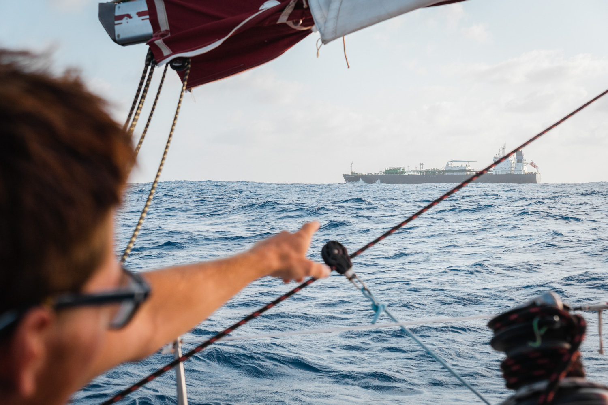
Je crois que je n’ai pas grand chose à raconter aujourd’hui. Nous naviguons toujours sous GV 2 ris et génois mais j’espère qu’on pourra remettre le spi dans peu de temps.
Comme prévu, au bout de 5 jours je fais un check complet des bouts et de l’accastillage du bateau pour m’assurer que tout va bien. A part l’écoute de spi tribord qui a beaucoup travaillé dans le tangon ces derniers jours, rien d’inquiétant en vue !
D’ailleurs, ça fait aujourd'hui 3 mois tout pile qu’on a quitté Brest !
On a enfin remis le spi ! L’état de mer est un peu rouleur même si le spi atténue pas mal les effets de la houle.
Dans l’après-midi, je regarde un film pour passer le temps.
Pendant mon quart, j’ai pas mal de boulot puisque le vent monte. Je dois prendre un ris et jouer avec les réglages du bateau pour s’adapter aux conditions de vent changeantes. La météo commence à changer…
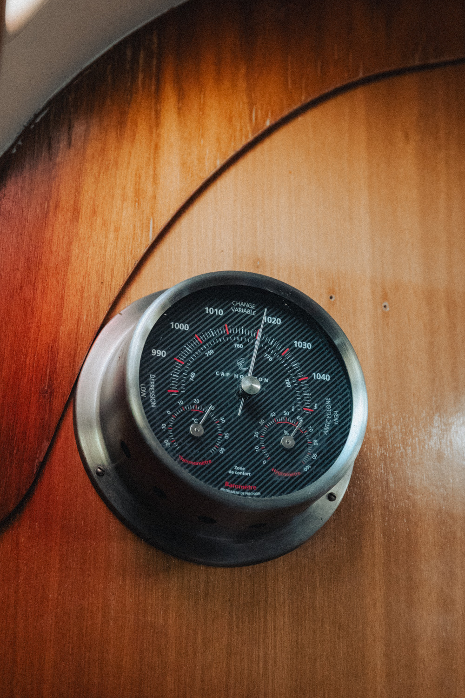
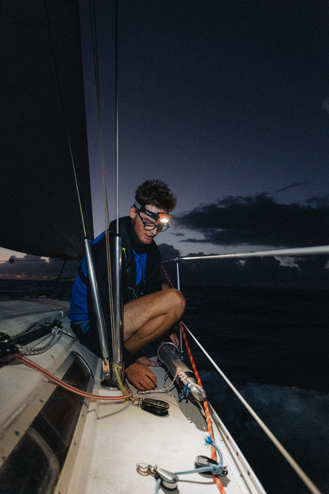
Ça y est ! Moins de 1000 milles avant l’arrivée. Journée calme aujourd'hui avec un empannage en fin de nuit pour retrouver du bâbord après une semaine de tribord. On s’est laissé porter par le vent toute la journée jusqu’à affaler toutes les voiles pour se baigner au milieu de l’Atlantique ! Un vrai plaisir de nager dans une aussi belle eau, surtout après une journée de chaleur. Merci Clem d’avoir insisté pour qu’on s’arrête ! C’était aussi l'occasion de prendre une douche et ça fait un bien fou.
Ensuite, petit apéro des 1000 milles. Le bateau est calme. Clément nous montre le montage de la vidéo de Madère sur lequel il bosse depuis 4 jours. Magnifique vidéo qui raconte bien notre aventure sur cette île. Hâte qu’elle sorte sur YouTube pour partager ça avec tout le monde !
Nouvel empannage au changement de quart cette nuit, le premier pour Félicien à l’avant. Ça s’est déroulé nickel, on est donc de retour en tribord.

Ce matin, j’ai cuisiné des pancakes.
Dans la journée, j’ai préparé des animations à insérer dans la vidéo de notre randonnée à Madère. Clément termine la vidéo et nous pourrons la publier la prochaine fois qu’on allumera le Starlink.
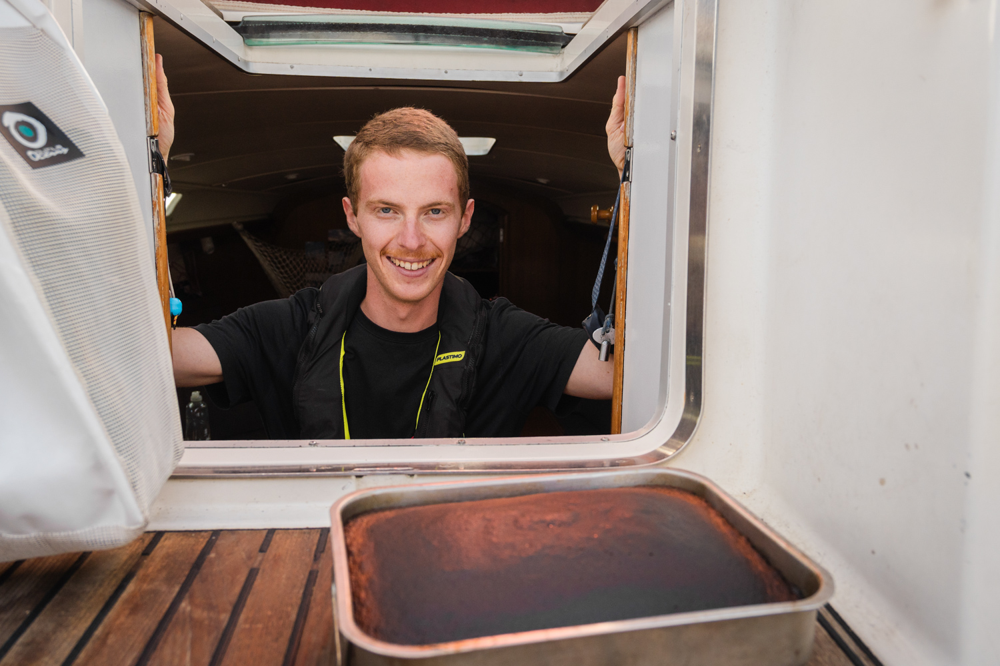
Je n’ai pas beaucoup écrit ces derniers jours, étant très occupé avec le montage vidéo et le traitement des photos. Mais je suis content de rentabiliser le temps de la transat pour m’occuper de ça et avoir plus de temps pour profiter dans les îles à l’arrivée !
Ce matin (vers 4h), je sors légèrement de mon sommeil, réveillé par une odeur de crêpe. Au moment de prendre mon quart, Loann vient me réveiller en toquant à ma porte avec une crêpe au Nutella à la main. Il me la tend. J’ai l’impression de rêver ! Je sors instantanément de mon lit et saute sur cette petite douceur. Il a bien compris comment me sortir du lit ce Lolo !
Au lever du soleil, j’ai l’impression que l’on croise moins de sargasses. Je tente alors de mettre une ligne de pêche à l’eau… on verra bien. Après quelques remontées pour enlever les algues prises dans l’hameçon, j’ai enfin une touche ! C’est une dorade coryphène de bonne taille. Je la ramène à l’arrière et la lève en filet. C’est la bonne surprise au réveil pour Loann et Félicien puisqu’il y aura du poisson dans les assiettes aujourd'hui ! Le soir, on la cuisine avec une sauce au beurre blanc et un écrasé de pommes de terre, un régal.
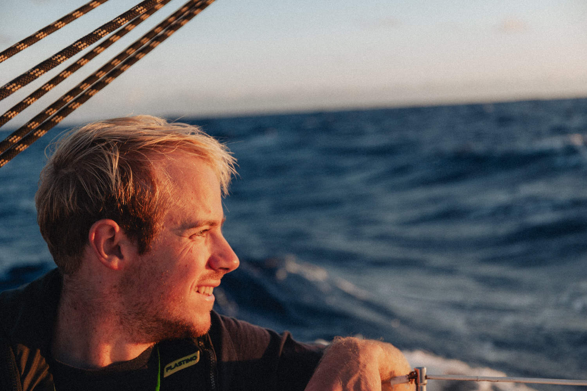
En début de nuit, on a voulu empanner. Malheureusement au moment où le bras du spi a été choqué, le bout du tangon a cassé, l’extrémité accrochée au mât s’est déboîtée.
On a donc affalé et on est repassé sous GV 2 ris et génois. Heureusement d’ailleurs car le vent est monté à 28 nds et 32 en rafale dans la matinée. On va attendre de voir si le vent baisse pour renvoyer le spi. En attendant, on bricole une réparation pour le tangon qui devrait tenir sans trop de problèmes.
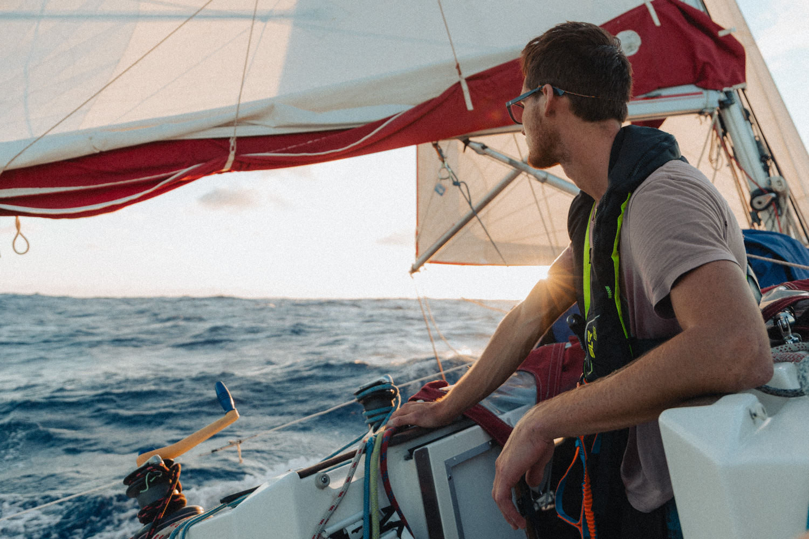
Il ne nous reste plus que 490 milles ! On a hâte d’arriver car les conditions de navigation se sont vraiment dégradées. Quand on y repense, on a fait les 5 premiers jours sous spi non-stop avec des moyennes de vitesses plus que satisfaisantes ! Ensuite le vent est tombé pendant plusieurs jours et c’était frustrant de ne plus avancer aussi vite. Et maintenant depuis 2 jours on commence à prendre des grains de plus en plus fort et surtout la nuit.
Il y a 2 jours j’étais sous spi et un grain est arrivé, ce n’était pas très violent mais on a quand même pris 25 nds dans les rafales. C’était du délire, le bateau avançait à 9-10 nds constant ! Mais bon depuis que les grains s’intensifient et que notre tangon est fragilisé, le spi c’est fini !
Ce matin, il y avait tout contre moi. Au lever du soleil je prends un grain à plus de 30 nds, je suis obligé d’affaler la grand voile. Dans la manœuvre je me fais tremper de la tête au pied par une vague qui vient frapper le bateau. Même mon caleçon est mouillé… Une fois que ça s’est calmé, j’avais envie de faire un gâteau. Et là encore, pas de chance, au moment de l’enfourner, une vague fait pencher le bateau violemment et le plat du gâteau tombe derrière la gazinière. C’est foutu pour le gâteau et en plus je vais devoir nettoyer pendant plus d’une heure. Vivement qu’on arrive !
On a passé la journée en ciseau GV génois, on a pas trop mal avancé.
Ce soir, on a eu je pense le plus beau coucher de soleil de la transat ! Les couleurs et les lumières étaient magnifiques !
On s’est préparé pour du vent fort cette nuit avec pour la première fois de ma vie un 3ème ris ! Pour l’instant, ça reste raisonnable même si c’est costaud et que le bateau est invivable avec ses mouvements et accélérations dans tous les sens. Au moins on avance vite vers l’arrivée. À priori, ça sera pour mardi, reste à définir à quelle heure…
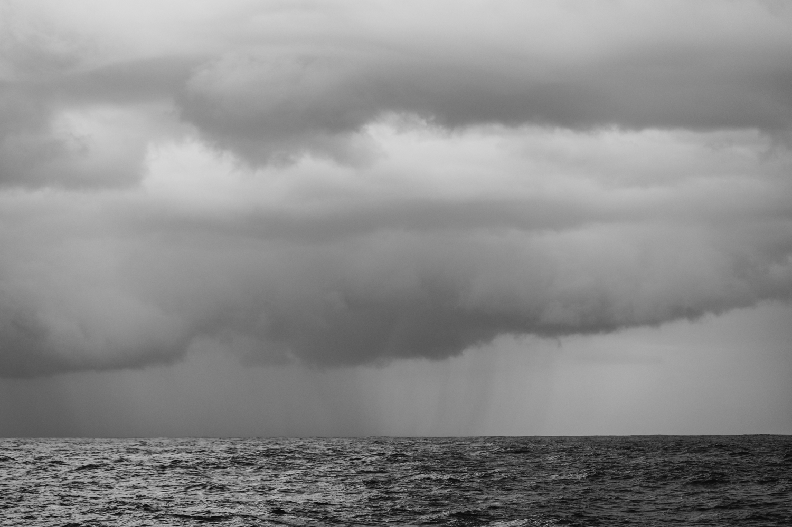
Dernier quart de la transat !
Depuis ce matin, nous avons un fort courant de face, entre 1,5 et 2,5 nds. Cela anéantit toutes nos chances de boucler la transat en moins de 14 jours… Les conditions de mer sont chaotiques, le vent rencontre le courant, ce qui lève une mer courte et creuse, qui vient se croiser avec une houle plus lointaine.
Dans l’après-midi, un oiseau - un fou à pieds rouges - nous a tenu compagnie sur le bimini.
Ce soir c'était apéro du dernier soir. L’occasion de sortir l’unique boîte de pâté Henaff !
Pour ce qui est du sommeil, cela devient vraiment difficile avec les mouvements perpétuels du bateau et c’est sans parler de la chaleur et des draps poisseux et collants. Vivement une bonne machine à laver !
Nous apercevons les lumières de la Barbade au loin, premier signe que l’arrivée est imminente.
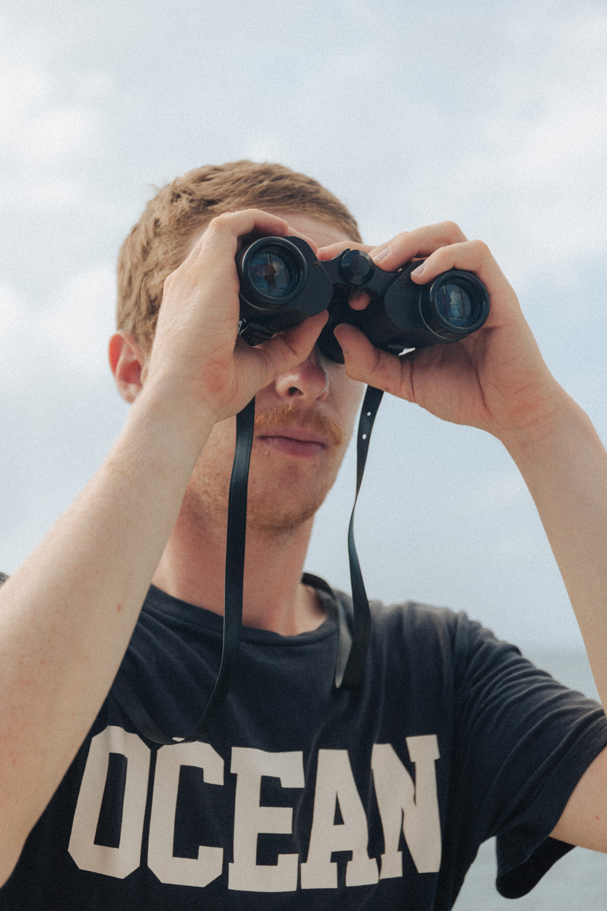
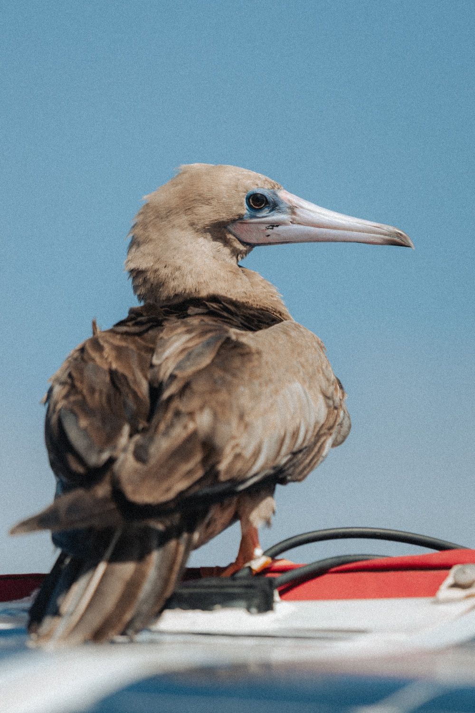
C’est le jour J ! On va enfin remettre le pied sur la terre ferme.
Ce matin, je me suis pris un très gros grain durant mon quart. Le bateau a empanné et on est resté bloqué à contre plusieurs minutes avant de pouvoir se sortir de la situation. Lorsque le vent baisse je me rends compte que l’anémomètre ne fonctionne plus. Il a dû prendre un choc sous le grain. Ça nous rappelle que tant que l’ancre n’est pas jetée, il faut rester encore vigilants et concentrés.
Dans la matinée, j’aperçois enfin la silhouette des îles des Grenadines !! Quel bonheur et quel soulagement d’arriver au bout de cette traversée. On continue à se rapprocher, puis nous passons le seuil du plateau des Grenadines. L’eau s'éclaircit et le sondeur indique 20 m d’eau. On distingue bien toutes les îles et on aperçoit les palmiers sur les plages. Pas de doute, nous sommes bien aux Antilles !
Nous arrivons à Union Island, dans la baie de Clifton. Nous nous mettons à l’ancre, on coupe le moteur et on saute à l’eau pour fêter l’arrivée ! Une case du voyage se coche, celle de la transatlantique.
Nous aurons finalement mis 14 jours, 1 heure et 36 minutes.
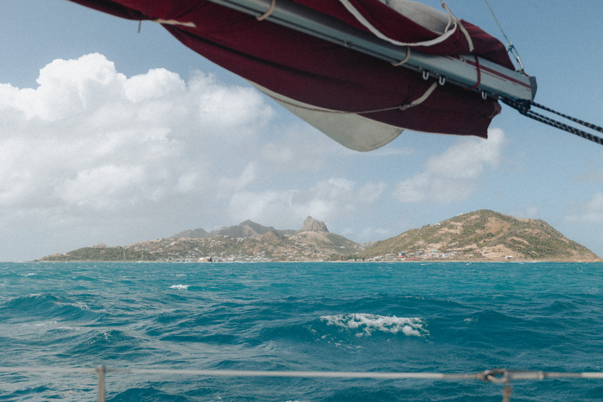
Arrivée : 21 janvier 2025, Baie de Clifton, Union Island, St Vincent et les Grenadines